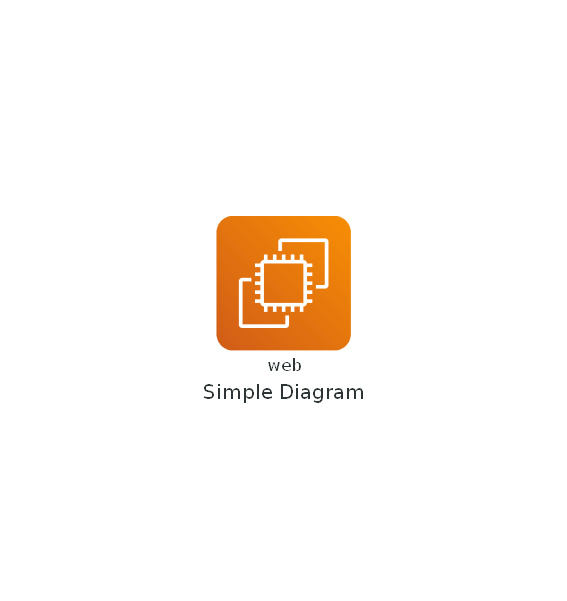
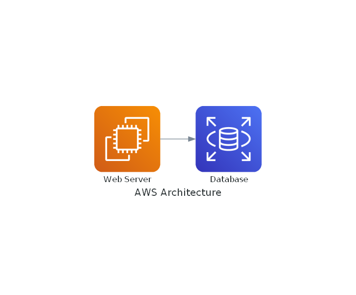
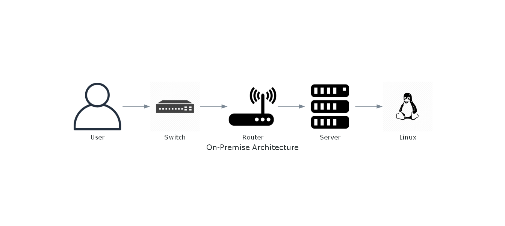
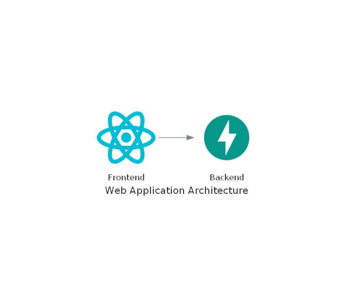
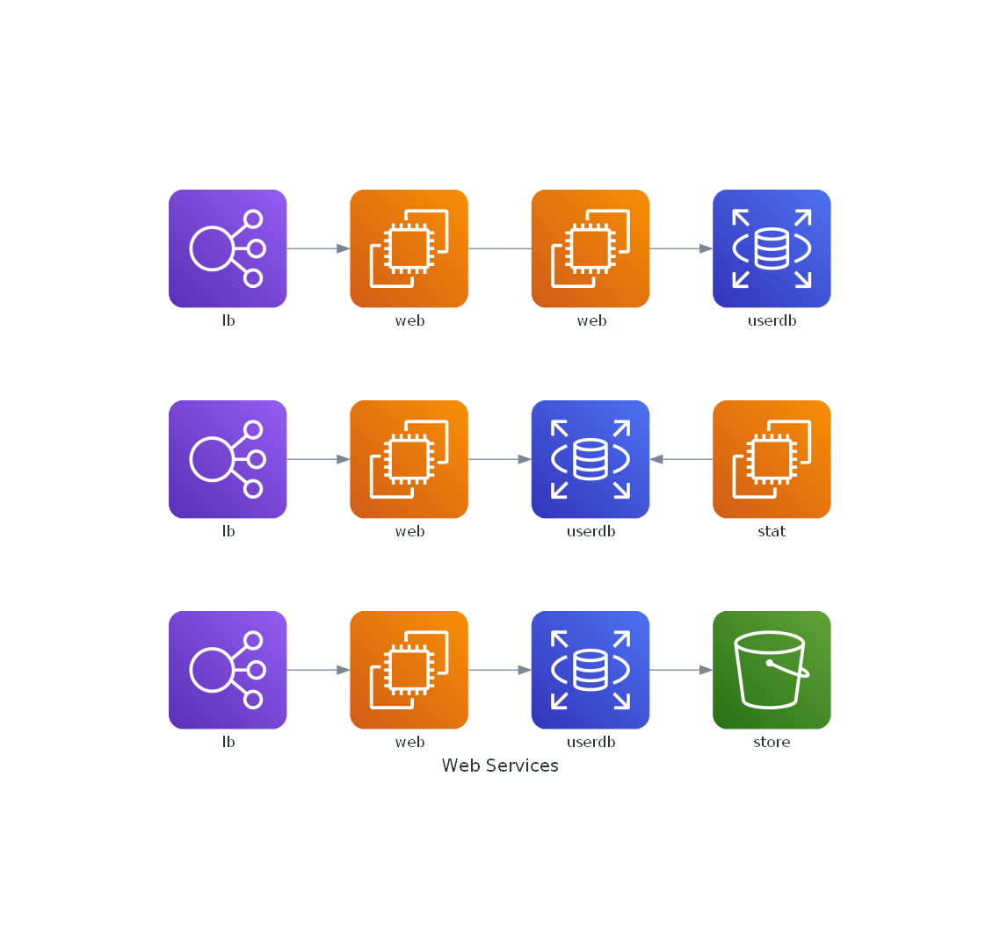
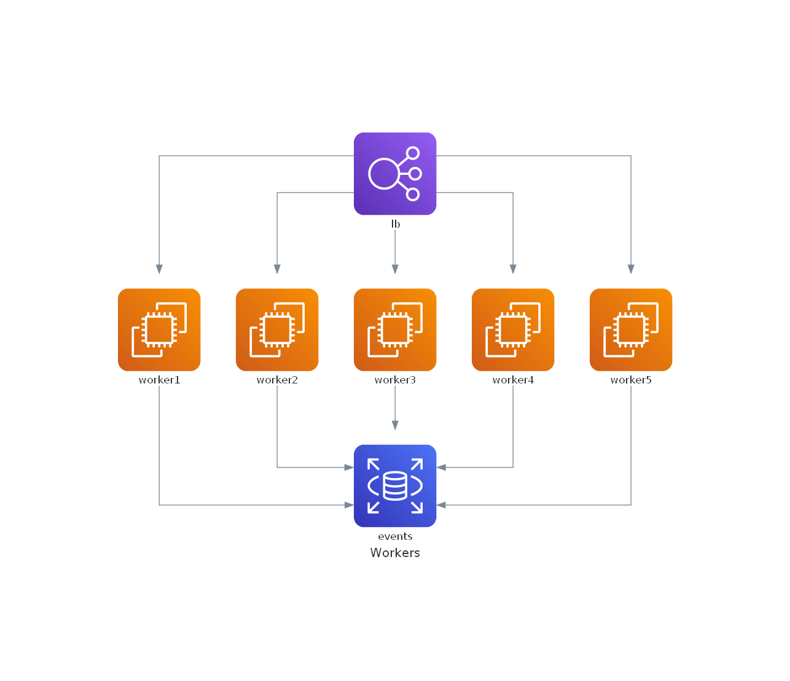
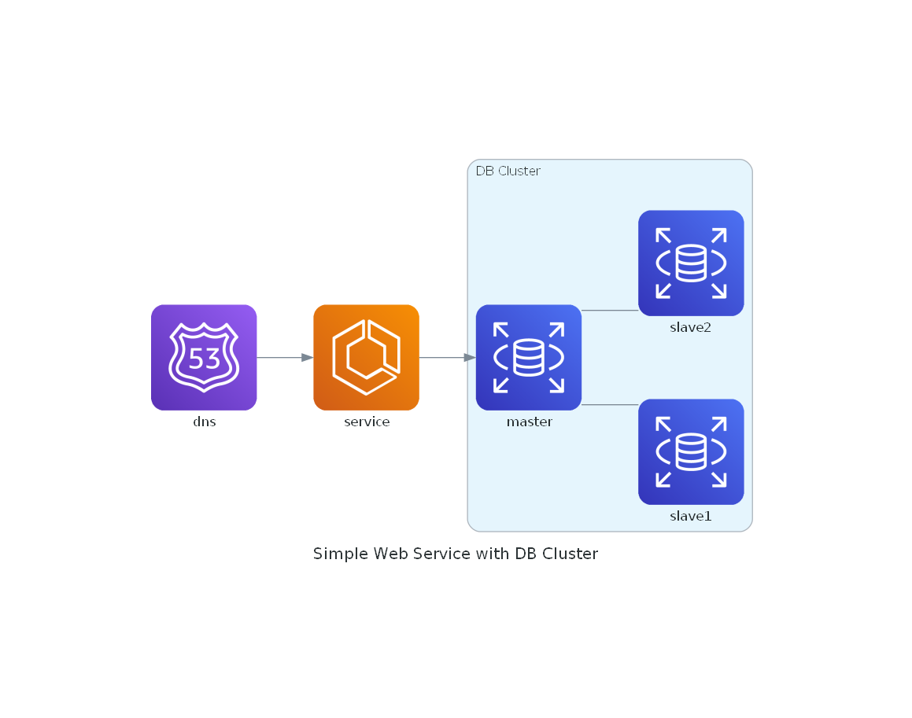
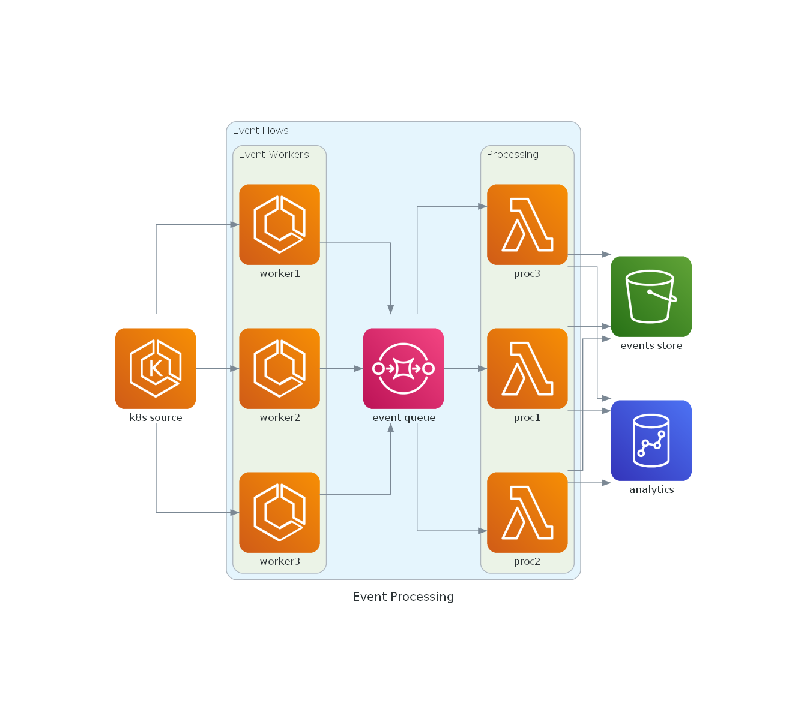
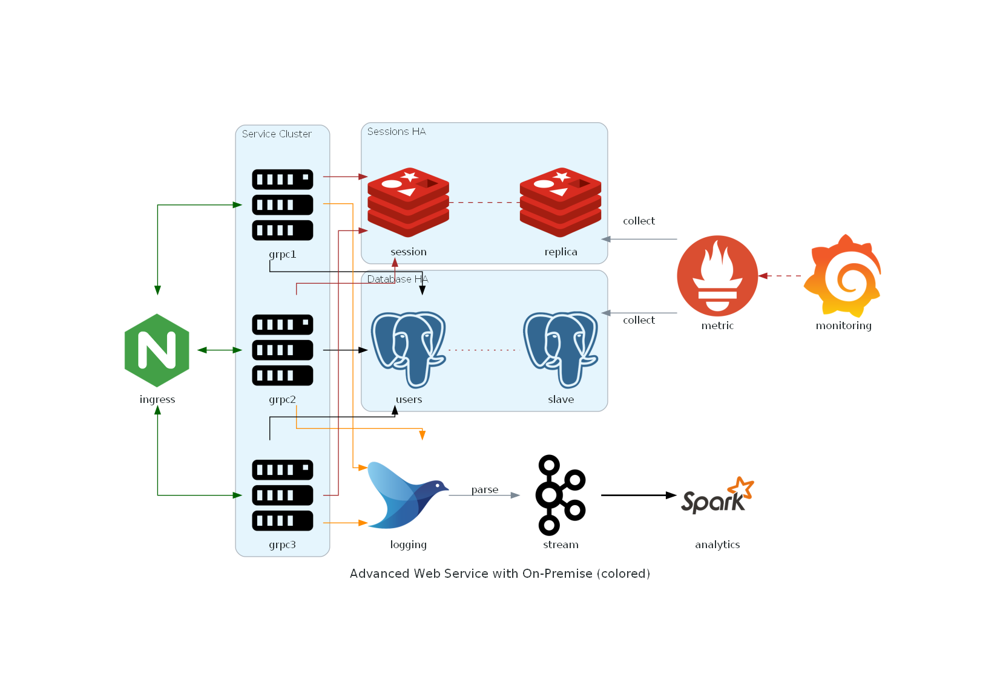

Diagrams
Introducción
El modelado visual es una parte fundamental en el desarrollo de software y en la administración de infraestructura. Los diagramas ayudan a los equipos a comprender y comunicar la arquitectura, los flujos de datos y las relaciones de manera efectiva. Sin embargo, crear y mantener diagramas puede ser un proceso laborioso y propenso a errores.
Diagrams es una biblioteca de Python que aborda este problema permitiéndote crear diagramas como código. Con Diagrams, puedes definir tu infraestructura o arquitectura en Python, lo que facilita la automatización, la documentación y la colaboración. En este artículo, exploraremos cómo utilizar Diagrams para crear diagramas eficientes y cómo puedes integrarlo en tus proyectos.
Instalación de Diagrams
Antes de comenzar, necesitamos instalar Diagrams. Puedes instalar Diagrams utilizando pip, el administrador de paquetes de Python.
Además, necesitaremos Graphviz, una herramienta para generar los diagramas. Puedes descargar Graphviz desde su sitio web oficial e instalarlo en tu sistema.
Creando Diagramas con Diagrams
Diagrams ofrece una forma intuitiva de crear diagramas como código en Python. Comencemos con un ejemplo básico:
from diagrams import Diagram
from diagrams.aws.compute import EC2
with Diagram("Simple Diagram", show=False) as diagram:
EC2("web")
diagram

- Importa las bibliotecas necesarias:
from diagrams import Diagram: Importa la claseDiagramque se utiliza para crear el diagrama.-
from diagrams.aws.compute import EC2: Importa el componente EC2 de la biblioteca "diagrams" que representa una instancia de Amazon EC2. -
Crea un nuevo diagrama con el nombre "Diagrama Simple" utilizando la clase
Diagram. El parámetroshow=Falsese utiliza para indicar que el diagrama no se debe mostrar automáticamente cuando se crea. -
Dentro del bloque
with, se define un componente EC2 llamado "web" utilizando la claseEC2. Este componente representa una instancia de servidor virtual en la nube de Amazon Web Services (AWS) y se etiqueta como "web". -
El diagrama se cierra automáticamente al finalizar el bloque
with. -
Finalmente, el diagrama se muestra utilizando la variable
diagram, que contiene la representación visual del diagrama.
Tipos de componentes
La biblioteca "diagrams" proporciona componentes para una variedad de proveedores y tipos de recursos, lo que la hace versátil y adecuada para diferentes casos de uso. Aquí hay una descripción de los tipos de componentes más comunes disponibles en "diagrams":
AWS/GCP/Azure
Estos proveedores ofrecen componentes que representan los activos oficiales de los servicios en la nube de Amazon Web Services (AWS), Google Cloud Platform (GCP) y Microsoft Azure. Puede utilizar estos componentes para crear diagramas que representen la infraestructura en la nube de estos proveedores, como instancias EC2, bases de datos RDS, servicios de Azure, etc.
Ejemplo:
from diagrams.aws.compute import EC2
from diagrams.aws.database import RDS
with Diagram("AWS Architecture", show=False) as diagram:
web_server = EC2("Web Server")
database = RDS("Database")
web_server >> database
diagram

Generic and On-Premise
Estos componentes son útiles cuando desea representar tecnologías subyacentes que no están vinculadas a un proveedor de la nube específico o que se ejecutan en entornos locales (on-premise). Puede utilizar estos componentes para crear diagramas independientes de la nube.
Ejemplo:
from diagrams import Diagram
from diagrams.generic.network import Switch, Router
from diagrams.onprem.client import User
from diagrams.onprem.compute import Server
from diagrams.generic.os import LinuxGeneral
with Diagram("On-Premise Architecture", show=False) as diagram:
user = User("User")
switch = Switch("Switch")
router = Router("Router")
server = Server("Server")
linux = LinuxGeneral("Linux")
user >> switch >> router >> server >> linux
diagram

Frameworks
Estos componentes son útiles cuando desea representar componentes de sistemas relacionados con un lenguaje de programación o un marco de trabajo específico. Esto es útil para mostrar cómo se integran diferentes tecnologías en su sistema.
Ejemplo:
from diagrams.programming.framework import React
from diagrams.programming.framework import Fastapi
with Diagram("Web Application Architecture", show=False) as diagram:
frontend = React("Frontend")
backend = Fastapi("Backend")
frontend >> backend
diagram

SaaS
La biblioteca "diagrams" también proporciona componentes para representar Software como Servicio (SaaS) que se pueden utilizar en su arquitectura. Esto es útil cuando desea mostrar integraciones con servicios externos como Slack, Gmail, etc.
Ejemplo:
from diagrams.gcp.ml import AIPlatform
from diagrams.saas.chat import Slack
with Diagram("Integration with SaaS", show=False) as diagram:
app = AIPlatform("Your Application")
slack = Slack("Slack")
app >> slack
diagram
Warning: node 'd06d55f8d4884416b3bc92dfda6bba44', graph 'Integration with SaaS' size too small for label
Más conceptos
Nodes
Node es un segundo objeto que representa un nodo o componente del sistema. Node es un concepto abstracto que representa un único objeto componente del sistema.
Un objeto Node consta de tres partes: proveedor, tipo de recurso y nombre. Es posible que ya haya visto cada parte en el ejemplo anterior.
from diagrams import Diagram
from diagrams.aws.compute import EC2
with Diagram("Simple Diagram", show=False) as diagram:
EC2("web")
diagram
En el ejemplo anterior,EC2 es un nodo de tipo de recurso informático proporcionado por el proveedor de AWS.
Data Flow
Puede representar el flujo de datos conectando los nodos con estos operadores:
>>: Conecta los nodos de izquierda a derecha.<<: Conecta los nodos de derecha a izquierda.-: Conecta nodos en ninguna dirección. No dirigido.
from diagrams import Diagram
from diagrams.aws.compute import EC2
from diagrams.aws.database import RDS
from diagrams.aws.network import ELB
from diagrams.aws.storage import S3
with Diagram("Web Services", show=False) as node:
ELB("lb") >> EC2("web") >> RDS("userdb") >> S3("store")
ELB("lb") >> EC2("web") >> RDS("userdb") << EC2("stat")
(ELB("lb") >> EC2("web")) - EC2("web") >> RDS("userdb")
node

Tenga cuidado al usar `-` y cualquier operador de turno juntos, lo que podría causar resultados inesperados debido a la precedencia del operador.
Puede cambiar la dirección del flujo de datos con el parámetro direction. El valor predeterminado es LR.
from diagrams import Diagram
from diagrams.aws.compute import EC2
from diagrams.aws.database import RDS
from diagrams.aws.network import ELB
with Diagram("Workers", show=False, direction="TB")as node:
lb = ELB("lb")
db = RDS("events")
lb >> EC2("worker1") >> db
lb >> EC2("worker2") >> db
lb >> EC2("worker3") >> db
lb >> EC2("worker4") >> db
lb >> EC2("worker5") >> db
node

Group Data Flow
El ejemplo del worker anterior tiene demasiados flujos redundantes. En este caso, puede agrupar nodos en una lista para que todos los nodos estén conectados a otros nodos a la vez.
from diagrams import Diagram
from diagrams.aws.compute import EC2
from diagrams.aws.database import RDS
from diagrams.aws.network import ELB
with Diagram("Grouped Workers", show=False, direction="TB") as node:
ELB("lb") >> [EC2("worker1"),
EC2("worker2"),
EC2("worker3"),
EC2("worker4"),
EC2("worker5")] >> RDS("events")
node
No puede conectar dos listas directamente porque las operaciones `shift/arithmetic` entre listas no están permitidas en Python.
Clusters
Cluster le permite agrupar (o agrupar) los nodos en un grupo aislado. Cluster representa un contexto de clúster local.
Puede crear un contexto de clúster con la clase Cluster. Y también puede conectar los nodos de un clúster a otros nodos fuera de un clúster.
from diagrams import Cluster, Diagram
from diagrams.aws.compute import ECS
from diagrams.aws.database import RDS
from diagrams.aws.network import Route53
with Diagram("Simple Web Service with DB Cluster", show=False) as cluster:
dns = Route53("dns")
web = ECS("service")
with Cluster("DB Cluster"):
db_master = RDS("master")
db_master - [RDS("slave1"),
RDS("slave2")]
dns >> web >> db_master
cluster

Nested Clusters
También es posible la agrupación en clústeres anidados.
from diagrams import Cluster, Diagram
from diagrams.aws.compute import ECS, EKS, Lambda
from diagrams.aws.database import Redshift
from diagrams.aws.integration import SQS
from diagrams.aws.storage import S3
with Diagram("Event Processing", show=False) as cluster:
source = EKS("k8s source")
with Cluster("Event Flows"):
with Cluster("Event Workers"):
workers = [ECS("worker1"),
ECS("worker2"),
ECS("worker3")]
queue = SQS("event queue")
with Cluster("Processing"):
handlers = [Lambda("proc1"),
Lambda("proc2"),
Lambda("proc3")]
store = S3("events store")
dw = Redshift("analytics")
source >> workers >> queue >> handlers
handlers >> store
handlers >> dw
cluster

No hay límite de profundidad de anidación. Siéntase libre de crear clústeres anidados con la profundidad que desee.
Edges
Edge representa un borde entre nodos. Edge es un objeto que representa una conexión entre nodos con algunas propiedades adicionales.
Un objeto Edge contiene tres atributos: etiqueta, color y estilo que reflejan los atributos de borde de graphviz correspondientes.
from diagrams import Cluster, Diagram, Edge
from diagrams.onprem.analytics import Spark
from diagrams.onprem.compute import Server
from diagrams.onprem.database import PostgreSQL
from diagrams.onprem.inmemory import Redis
from diagrams.onprem.aggregator import Fluentd
from diagrams.onprem.monitoring import Grafana, Prometheus
from diagrams.onprem.network import Nginx
from diagrams.onprem.queue import Kafka
with Diagram(name="Advanced Web Service with On-Premise (colored)", show=False) as edges:
ingress = Nginx("ingress")
metrics = Prometheus("metric")
metrics << Edge(color="firebrick", style="dashed") << Grafana("monitoring")
with Cluster("Service Cluster"):
grpcsvc = [
Server("grpc1"),
Server("grpc2"),
Server("grpc3")]
with Cluster("Sessions HA"):
master = Redis("session")
master - Edge(color="brown", style="dashed") - Redis("replica") << Edge(label="collect") << metrics
grpcsvc >> Edge(color="brown") >> master
with Cluster("Database HA"):
master = PostgreSQL("users")
master - Edge(color="brown", style="dotted") - PostgreSQL("slave") << Edge(label="collect") << metrics
grpcsvc >> Edge(color="black") >> master
aggregator = Fluentd("logging")
aggregator >> Edge(label="parse") >> Kafka("stream") >> Edge(color="black", style="bold") >> Spark("analytics")
ingress >> Edge(color="darkgreen") << grpcsvc >> Edge(color="darkorange") >> aggregator
edges
Warning: Orthogonal edges do not currently handle edge labels. Try using xlabels.

Conclusión
Diagrams es una herramienta poderosa que facilita la creación de diagramas como código en Python. Te permite representar infraestructuras y arquitecturas de manera eficiente, lo que es útil para la documentación, la colaboración y la automatización. Al utilizar Diagrams, puedes mejorar la comprensión y la comunicación de tus diseños y proyectos.